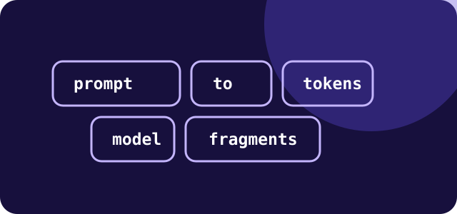
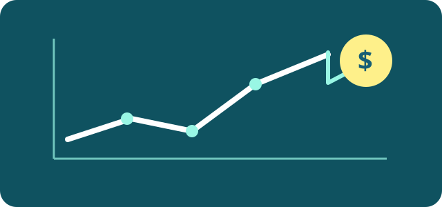
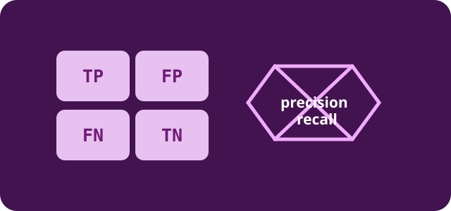
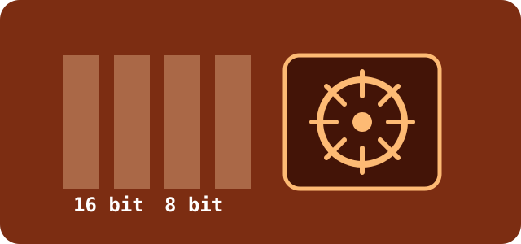

Guides
Understand the math behind the tools.
Short, practical explanations for the AI and ML decisions developers make repeatedly. Start with a concept, then use the linked calculator to try it yourself.

LLM basics · 6 min read
How many tokens are in 1,000 words?
Why the answer is an estimate, how character count changes it, and how to budget prompts safely.
Read guide
Cost planning · 7 min read
How to calculate LLM API cost
A transparent formula for input tokens, output tokens, request volume, and monthly spend.
Read guide
Machine learning · 8 min read
Precision vs recall vs F1
A confusion-matrix-first explanation with examples and the trade-offs behind each metric.
Read guide
AI hardware · 6 min read
How to estimate GPU VRAM
Understand weight memory, precision, overhead, and why training needs more than raw model weights.
Read guide